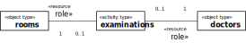
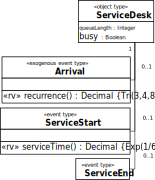

Business Process (BP) Modelling and Simulation (M&S) has been a core research topic both in Discrete Event Simulation (DES)
and in Business Process Management (BPM) for a long time.
However, both areas have developed their own concepts and approaches (GPSS/SIMAN/Arena versus BPMN), largely ignoring each other’s research results.
Both DES and BPM approaches have many severe issues, including the lack of a formal semantics.
A new DES paradigm, Object Event Modelling and Simulation (OEM&S),
and a new process modelling language for OEM&S, DPMN, proposed by Wagner (2017,2018,2020,2021) allows solving these issues.
Overview
Issues in BP Modeling and Simulation
Ontological and Conceptual Foundations of DES
Event-Based Modeling of Discrete Processes
Modeling Activity Networks with DPMN
Modeling Processing Networks with DPMN
Modeling the Load-Haul-Dump AN with AnyLogic
Modeling the Diagnostic Department PN with AnyLogic and Simio
Summary
Issues inBP Modelingand Simulation
resourcecardinality constraints
multitaskingconstraints
task priorities
activity preemption
Issues in BP Modeling in IS/BPM
Using a simplistic concept of BPs due to a focus on administrative workflows (as in Banking, Insurance, etc.),
not supporting important resource modeling concepts:
passive resources such as equipment, rooms, vehicles, etc. (as in Health Care, Manufacturing, etc.),
resource cardinality constraints and multitasking constraints,
alternate resource pools,
task priorities and activity preemption.
Unnatural semantics of BP models (by translating them to Petri Nets)
Resource Cardinality and Multitasking Constraints 1:1

Resource cardinality constraint: an examination involves exactly one doctor.
Multitasking constraint: a doctor performs at most one examination at a time.
Resource Cardinality and Multitasking Constraints M:N
Resource cardinality constraint: teaching a course involves at least one and at most two teachers.
Multitasking constraint: a teacher is teaching at most seven courses (during a semester).
Unnatural Semantics of BP Models
It has been an unfortunate choice in the history of BPM to view business process models as Petri Nets.
Event Graphs are the natural foundation of business process models.
BPMN
The Business Process Modeling Notation (BPMN) does not support simulation.
However, BPMN models can be turned into limited forms of simulation models by...
adding probability distributions for the rate of incoming "cases" and for activity durations,
assigning probabilities to the outgoing branches of decision nodes,
defining human resources and assigning them to performer pools.
Have been proposed by Schruben (1983) for event-based simulation.
The integer variable Q denotes the length of the queue. The Boolean variable B denotes the busy/available status of the service station.
The semantics of an Event Graph is obtained by decomposing it into event rules.
Strengths and Weaknesses of Event Graphs
Strengths:
They provide an intuitive visual modeling language.
They capture the fundamental ES paradigm.
Weaknesses:
They lack a visual notation for (conditional and parallel) branching.
They do not support OO state structure modeling (with objects/classes and attributes).
They do not support activities.
Object Event Graph Models
An Object Event Graph simulation model is defined by two submodels:
A special form of UML class model, called Object Event (OE) class model, as an information design model
An Object Event Graph as a process design model based on an underlying OE class model

An OE Class Model
«rv» = random variable
{Tri(3,4,8)} is a constraint requiring the operation to implement (or comply with)
the triangular probability distribution with lower bound 3, mode 4 and upper bound 8.
{Exp(1/6)} is a constraint requiring the operation to implement (or comply with)
the exponential probability distribution with an event rate of 1/6 (that is, on average 1 event every 6 time units).
An Object Event Graph as Process Design Model
The Complete Simulation Design Model
Modeling Activity Networks with DPMN
The Layers of DPMN (1)
Layer
Concepts
Diagrams
Event-Based Simulation
Event Graphs (Schruben 1983)
Events, Event Scheduling Arrows, Assignments
Object Event Simulation
Object Event Graphs (Basic DPMN)
+ Objects w/ State Changes
Activity Networks (DPMN-AN)
Activities
Resource-Dependent Activity Scheduling Arrows
Resource Roles
Resource Multiplicity Constraints
Resource Pools
Introducing Activities as Pairs of Start and End Events
Resource-Dependent Activity Scheduling Arrows
The Load-Haul-Dump Model
A haul service company accepts requests for hauling large quantities of earth from a loading site to a dump site,
{Tri( l, u, m)} is a constraint requiring the operation to comply with
the uniform probability distribution with lower bound l, upper bound u and median m.
DPMN Process Design Model
Modeling Processing Networks with DPMN
Processing Networks
... generalize Queueing Networks (M/M/c, etc.)
... have been pioneered by GPSS (1961), SIMAN (1982) and Arena (1992)
... are often characterized by "entities flowing through a system"
More precisely:
A Processing Object enters a Processing Network via an Arrival event
at an Entry Station,
is subsequently routed along a chain of Processing Stations where it is
subject to Processing Activities,
and finally exits the network via a Departure event at an Exit Station.
The Layers of DPMN (2)
Layer
Concepts
Diagrams
Object Event Simulation
Activity Networks (DPMN-AN)
Activities, RDAS Arrows, ...
Processing Networks (DPMN-PN)
Processing Activities
Entry/Processing/Exit Nodes
Processing Flow Arrows
Example: A Single Workstation System as a Processing Network
A Processing Flow arrow represents a combined object and event flow.
The Real Meaning of PN Nodes
Event/activity flows are complemented by corresponding flows of processing objects.
Processing Networks extend Activity Networks, which extend Object Event Graphs.
Modeling the Load-Haul-Dump AN with AnyLogic
Modeling an AN as a PN
Since "process modeling" tools (such as Arena, Simio and AnyLogic) do not support ANs, but only PNs,
we need to impose a PN view on the Load-Haul-Dump AN.
This requires to figure out what could be used as "entities" for being able to make a PN model.
In the case of Load-Haul-Dump, one option is using the 5 trucks of the haul service company
as the entities (called "agents" in AnyLogic), which
arrive at a truck entry node and
flow through the processing nodes Load, Haul and Dump before
they leave the system via a truck exit node.
The AnyLogic Load-Haul-Dump Model
DPMN
AnyLogic
Modeling the Diagnostic Department PN with AnyLogic and Simio
The Diagnostic Department Model
A diagnostic department of a hospital performs electrocardiography (ECG) and ultrasound scans (US).
Arrivals defined by: Interarrival time +
Interarrival time
Limited number of arrivals: true + Max. number of
arrivals
“On exit” action
End Event node
eventType
onEvent()
Sink
(not available)
“On enter” action
Activity node
activityType
duration()
onActivityStart()
onActivityEnd()
Service or [Seize+]Delay[+Release]
(not available)
Delay time
“On enter” action
“On exit” action
Resource Pool (by default, implicitly
defined per resource role type or per organizational
position)
Resource Pool defines an individual resource pool
(with resource objects of the default type Agent or of a
user-defined type)
Resource Role (defined per activity type in
the underlying OE class model)
A resource pool assignment in the Resource pool field
of the Service element (or the Seize element in a
Seize+Delay+Release pattern)
Resource Cardinality Constraints of the form
l..u
Only available in the limited form of l = u by
entering u in the field Number of units of the
Service element (or the Seize element in a
Seize+Delay+Release pattern)